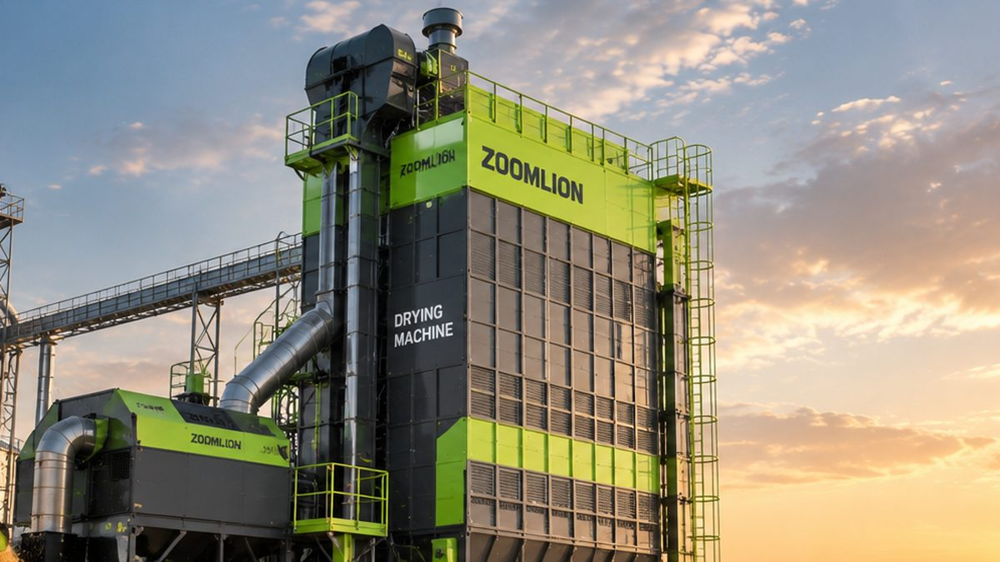

Musim Hujan Datang, Mesin Pengering Gabah Jadi Penentu Mutu Panen
Panen di musim hujan membuat gabah sulit dijemur. Kenali cara kerja dryer dan pilihan mesin pengering gabah Zoomlion.

BMKG memprediksi musim hujan 2026 mulai datang pada Oktober dan meluas ke sebagian besar Pulau Jawa pada November. Bagi petani dan penggilingan, ini berarti tantangan klasik kembali datang: gabah sulit dijemur.
Gabah basah yang terlalu lama menumpuk berisiko berjamur, berubah warna, dan turun harganya. Kementan pun mendorong penggunaan dryer sebagai bagian dari upaya meningkatkan rendemen giling dan mutu beras serta menurunkan kehilangan hasil.
Kelebihan Dryer Dibanding Jemur Matahari
Tidak Bergantung Cuaca
Pengeringan tetap berjalan siang dan malam, hujan maupun mendung, sehingga gabah bisa segera diproses setelah panen.
Kadar Air Lebih Seragam
Suhu dan aliran udara diatur, sehingga kadar air gabah lebih merata dan mutu beras lebih terjaga saat digiling.
Hemat Lahan dan Tenaga
Tidak perlu lantai jemur yang luas dan tenaga untuk membolak-balik gabah berkali-kali.
Kenali Jenis Aliran Udara
Pada dryer aliran silang (cross-flow), udara panas mengalir melintang menembus lapisan tipis gabah. Tipe ini umum dipakai dan andal untuk padi.
Pada dryer aliran campuran (mixed-flow), udara panas mengalir ke beberapa arah melalui saluran bersudut. Zoomlion menyebut dryer mixed-flow 5HXH-30 miliknya hingga 30% lebih efisien dibanding pengering cross-flow konvensional, dengan keseragaman kadar air hingga 1%.
Pilihan Dryer Zoomlion
Kapasitas 10–15 Ton
Seri 5HXG-10W, 12.5W, dan 15W dengan teknologi thin-layer cross-flow dan sumber panas biomassa atau sekam padi. Cocok untuk penggilingan dan kelompok tani skala menengah. Lihat detail.
Kapasitas 20–30 Ton
Seri 5HXG-20W dan 30W dengan elevator low-breakage untuk menjaga keutuhan biji, serta pilihan sumber panas biomassa, sekam padi, gas, atau bahan bakar minyak. Lihat detail.
5HXG-30C1 dan 5HXG-30E
Dryer cross-flow 30 ton per batch dengan panel layar sentuh dan pengeringan otomatis. Varian 30E dilengkapi kontrol suhu cerdas untuk pengeringan hemat energi. Lihat 30C1 · Lihat 30E.
5HXH-30
Dryer mixed-flow 30 ton per batch untuk padi, gandum, rapeseed, jagung, dan komoditas sejenis, dengan kontrol PLC layar sentuh dan pemantauan kadar air online. Lihat detail.
Tips Memilih Dryer
Hitung jumlah gabah yang harus dikeringkan per hari saat puncak panen, lalu pilih kapasitas yang sesuai. Pertimbangkan juga sumber panas yang paling mudah didapat, misalnya sekam dari penggilingan sendiri, dan pastikan tersedia listrik 380 V tiga fasa sesuai kebutuhan mesin.
Kesimpulan
Di musim hujan, kecepatan mengeringkan gabah menentukan mutu dan harga jual. Dryer yang tepat membantu panen tetap bernilai tinggi meski matahari jarang muncul.
Ingin menghitung kebutuhan dryer? PT Diesel Agri Sukses Sejahtera siap membantu memilih kapasitas dan sumber panas dryer Zoomlion yang sesuai.
Butuh saran? Hubungi kami.
Sumber: CNN Indonesia, IDN Times, Swadaya Online.